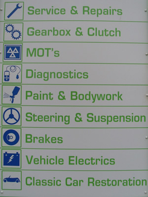

Our Services
We offer a by appointment M.O.T service to keep customer waiting to a minimum and we are able to Service a wide range of vehicles including cars, MPV's, minibuses, and light commercials.
Our workshop is fully equipped and we have the latest laptop diagnostic technology to successfully locate and repair vehicle faults. Wherever possible, we will supply accurate quotations before commencing any vehicle repairs.
AAMG Hull Ltd now also offers motorcycle M.O.T testing and minor repairs click the link here to find out more: Motorcycle MOT Testing In Hull
All our work undertaken is fully guaranteed and we are members of the RMIF (Retail Motor Industry Federation).

Our Services Consist Of:
We specialise in high performance cars, classic car restoration, manual and automatic gearbox repairs.
Servicing and repairs to all makes and models of cars and light commercials, minibuses and motor caravans.
Other services include fault diagnostics, auto electrical repairs, tracking, 4 wheel alignment and welding.
All our work is carried out by skilled tradesmen so with free estimates at competitive prices for a professional service please don't hesitate to contact us as we will be pleased to help in any way we can.